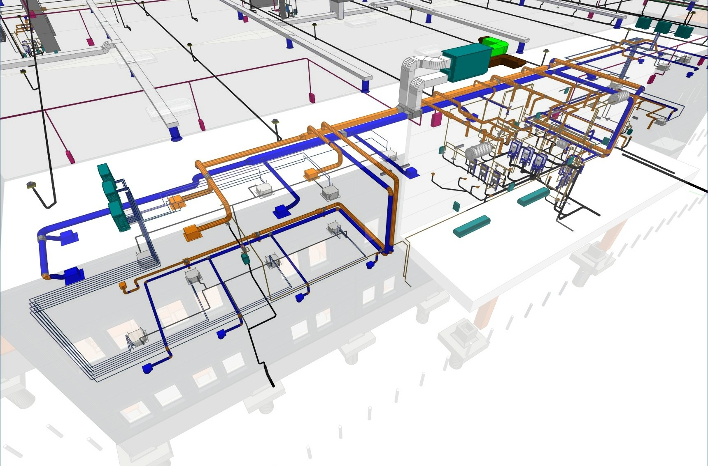
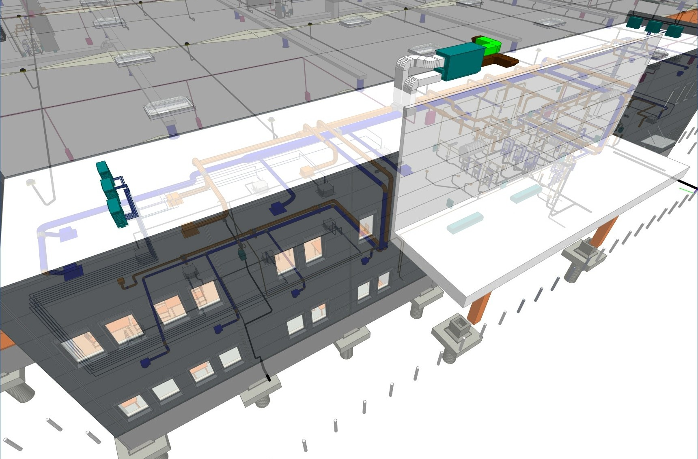

Épületgépészeti tervezés
Egyedi rendszerek lakóépületektől a komplex ipari technológiákig.
MEP · BIM · LOD 300
A budapesti BIMLine Gépész Kft. teljes körű épületgépészeti tervezést, épületdiagnosztikát és beruházási tanácsadást nyújt bármilyen léptékben. Alapvetően 2D-s tervezési módszerrel dolgozunk, komplex gépészeti csomópontok esetén pedig — igény szerint — 3D BIM-koordinációt is biztosítunk.


Építészet GépészetHúzd a vonalat — balra az építészeti, jobbra a gépészeti modell
Rólunk
Innovatív mérnökirodaként teljes körű MEP-tervezést, épületdiagnosztikát és beruházási tanácsadást nyújtunk. A 3 fős, magasan képzett állandó csapatunk és megbízható alvállalkozói hálózatunk rugalmas, precíz és energiahatékony megoldásokat ad — lakóépülettől a kritikus ipari infrastruktúráig.
Kompetenciák
Egyedi rendszerek lakóépületektől a komplex ipari technológiákig.
Alapvetően 2D-s tervezéssel dolgozunk; komplex gépészeti csomópontok esetén, igény szerint, magas szintű 3D modellezést és koordinációt is biztosítunk akár LOD 300 szintig.
Rendszeroptimalizálás, beruházási döntéstámogatás és megtérülés-számítás (ROI) meglévő épületekhez.
Speciális hűtés és szellőztetés adatközpontok, honvédségi és egészségügyi létesítmények számára.
Mit csinálunk pontosan?
Rendszeroptimalizálás
EN ISO 52120-1 szabvány szerint
Meglévő épületek fűtési, hűtési és szellőzési rendszereinek szabályozástechnikai felülvizsgálatát és optimalizálását vállaljuk, gyártótól függetlenül, az EN ISO 52120-1 szabvány szerint. A felmérés kitér a jelenlegi és az elérhető hatékonysági osztályra, és konkrét modernizációs javaslatokat ad — például nyomásfüggetlen szelepek, igényvezérelt szabályozás, szivattyú-optimalizálás.
Rendszerek, melyekkel a legmagasabb mérnöki színvonalon tervezünk.
Munkamódszer
A klasszikus mérnöki tervezést BIM-alapú koordinációval ötvözzük — így a hiba a képernyőn derül ki, nem a helyszínen.
Igényfelmérés, helyszíni bejárás, meglévő tervezési alapok (skicc, DWG, BIM) átvétele és állapotfelmérés.
Alapesetben 2D-s kiviteli tervezés; komplex gépészeti csomópontoknál, igény szerint, BIM-modellezés és ütközésvizsgálat is beépül a folyamatba, akár LOD 300 szintig.
Kivitelezésre kész tervdokumentáció, méretezés, energetikai és beruházás-megtérülési (ROI) számítások.
Tervezői művezetés, helyszíni egyeztetés a kivitelezővel, üzembe helyezés és a megvalósulási dokumentáció lezárása.
Referenciák
Lakóingatlantól az adatközpontig — méret, teljesítmény és komplexitás szerint.
Lefedettség
244 projekt-helyszín országszerte. A markerekre kattintva csak a település és a gépészeti kategória jelenik meg.
Adatvédelem: a markerek csak települést és gépészeti kategóriát jelenítenek meg, konkrét partnernév nélkül.
Energetikai elemzés
A fűtési, hűtési és szellőzési rendszerek megtakarítási potenciálja és megtérülése épületenként eltérő, ezért nem dolgozunk általános, online becslőkkel. Minden esetben helyszíni felméréssel alátámasztott, részletes egyedi számítást készítünk.
Energetikai elemzés kéréseKapcsolat
Írja le röviden a projektet — 1 munkanapon belül válaszolunk.